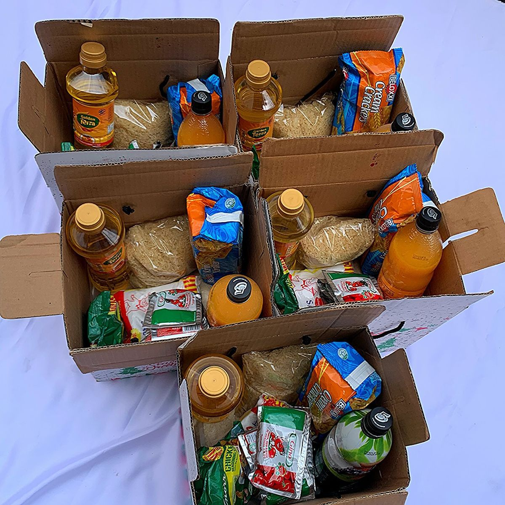
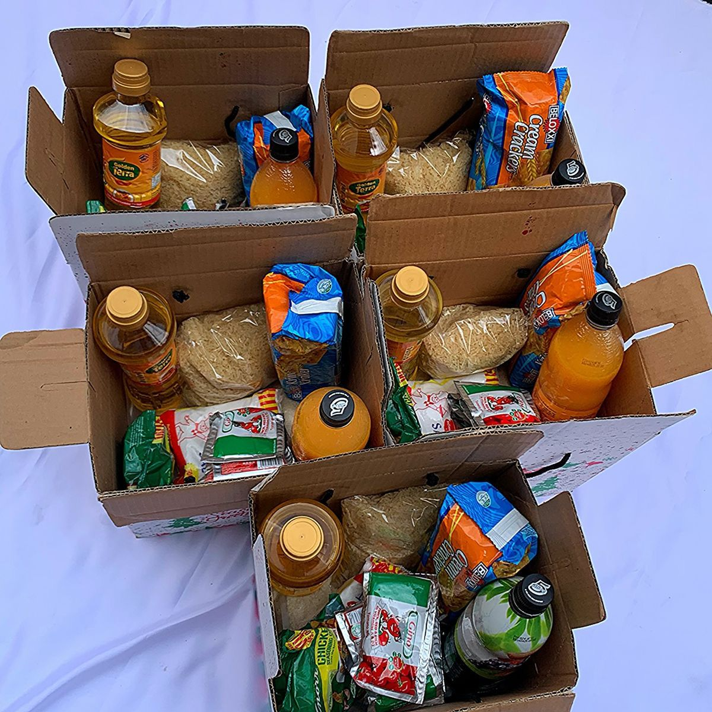

What We Do
The Matsila Foundation is a non-profit organization committed to uplifting poor communities across South Africa. We distribute food hampers, blankets, and clothes to those who need them most.
Feeding Hope. Spreading Warmth. Giving Back.
At the Matsila Foundation, we are dedicated to creating meaningful impact across the communities we serve. Through our food distribution programs, clothing drives, and educational initiatives, we strive to address the immediate needs of families while fostering long-term opportunities for growth and self-sufficiency. By partnering with local organizations, volunteers, and community leaders, we ensure that our efforts are sustainable, inclusive, and tailored to the unique challenges of each community. Every program we implement is guided by the principles of compassion, respect, and empowerment, ensuring that our work truly transforms lives.
The Matsila Foundation is a non-profit organization committed to uplifting poor communities across South Africa. We distribute food hampers, blankets, and clothes to those who need them most.
 


Monday-Friday 09:00-16:30
Saturday 09:00-14:00